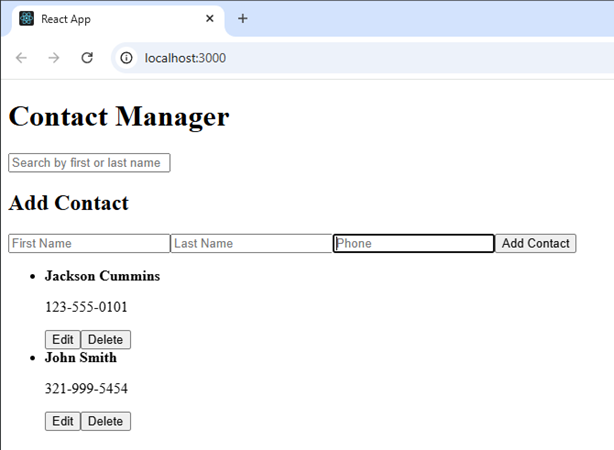
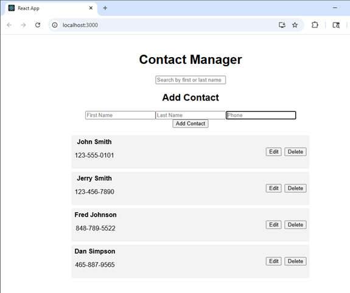
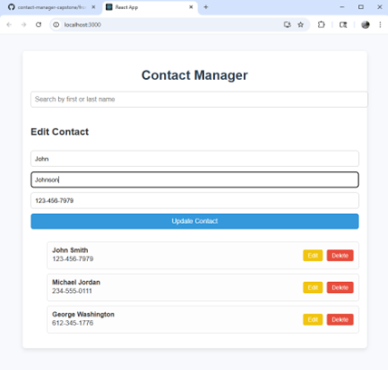

Code Review
Original Project Files
View the original version of the project on GitHub:
Original GitHub RepositoryThe original project was a basic Contact storage program written in Java that allowed a user to create Contact objects that would be stored in an ArrayList.
Enhanced Project Files
View the enhanced version of the project on GitHub:
Enhanced GitHub RepositoryThe enhanced program was a full stack web application built using React, Express, and MongoDB Atlas that allowed the user to create Contacts within an intuitive user interface, search Contacts by name, and save their contacts in a secure database.
Software Engineering Narrative
The artifact that was chosen for this enhancement was a contact list storage program from the CS 320 course. The original program allowed a user to enter information about each of their contacts that would be stored in a list that could be modified and deleted. This artifact was chosen for the software design/engineering category because it was a simple program that could be improved upon by implementing various software design practices. While the original project was a simple command line interface program with two java files, the updated enhancement consists of a web application developed using React and JavaScript that also provides a basic user interface that allows the user to better understand how to use the software. These enhancements were chosen as a way for me to showcase and further develop my full stack application skills.
The primary course outcome I met with this enhancement was to “Design, develop, and deliver professional-quality oral, written, and visual communications that are coherent, technically sound, and appropriately adapted to specific audiences and contexts. The main objectives for this module were to transfer the project from Java to JavaScript, as well as to provide the front end for a web application providing a better interface for the end user.
I had originally planned to create the interface through simple HTML, CSS, and vanilla JavaScript, however, I ended up using React instead with the goal of creating a more professional application that aligns with the technologies used in the industry. This was a major challenge for me as I had never used React before this project. I had to learn many of the basics from how to set up the React project scaffolding using npm commands, to learning the common syntax and features of a React app such as components and JSX elements. This was much different than the plain JavaScript that I have used in the past for web development, and I ran into one major error in which editing the information for a single contact would change the information for every contact in the list. To fix this issue, I implemented a handleSave() function in the App.js file that used to contact’s id attribute to ensure that only the contact with the proper id was modified when an update was made to the contact list.
Data Structures and Algorithms Narrative
The artifact that was chosen for the algorithms and data structure enhancement was the contact list storage program from CS 320. The original artifact consisted of a few java files defining a Contact object and a ContactService object, which allowed the user to define information for each contact and then store those contacts in a modifiable list. I chose this artifact for the algorithms and data structures enhancement because it used a few basic algorithms with for loops and conditional statements to define the methods for adding, editing, and deleting elements from the arraylist data structure in which the contact objects were stored. For the enhancement, my goal was to implement a search algorithm that would allow the user to type in either the first or last name of a contact and receive a filtered list showing only contacts with a matching name element.
This enhancement primarily aligns with course outcome 3, which involve the use of “algorithmic principles and computer science practices” to create a solution to a programming problem. The main problem I was trying to solve in this enhancement was to create a better user experience by allowing the user to more easily traverse the contact list to find their contact of interest. By creating an efficient algorithm, I was able to solve this problem and subsequently deliver a better experience directly within the user interface on the application’s front-end.
Since the enhanced project is being developed as a full stack web application with React as the front-end framework, the functionality for the search algorithm takes place in the App.js file as well as a component file named SearchBar.js. In the App.js file, I used a JavaScript method called filter() that returns elements of an array if they meet the conditions specified by a callback function. In the callback function, I instructed the filter method to return true if the results of the user’s search query were included in either the first name or the last name of the current contact. In order to get the user’s current search query, I used a handle change method to return the data in the search bar field each time a character in that field was updated. This allowed the filtered contacts list to be updated in real time rather than requiring the user to type out the entire name and hit enter before seeing search results.
Databases Narrative
The artifact that was chosen for the Databases enhancement was the same contact list storage program from CS 320 that was used for the previous two enhancements. The original program allowed users to create contact objects and store them in an arraylist, however, there was no database implemented in the program and the user had no way of saving their contacts when the program stopped running. I chose this artifact for the databases enhancement because it gave me an opportunity to create a new database from scratch and decide how I wanted the data to be stored. Working on these enhancements allowed me to meet the last two course outcomes of “using tools in computing practices to accomplish industry-specific goals” and to “ensure privacy and enhanced security of data and resources”.
The development process for this enhancement presented a unique challenge as it required me to set up a database, write code for the program’s backend logic, and refactor some of the frontend code in order to connect to the backend APIs. To create the database, I had to sign up for an account on MongoDB Atlas in order to create a free database that would be hosted on the cloud rather than on my local machine. I was given a secret key password by Atlas that I stored in my project’s .env file to allow the program to connect to the database. To enhance the security of the application, I included the .env file in the .gitignore file to prevent the secret key from being publicly available when the repository was uploaded to GitHub.
When creating the app’s backend, I created a server.js file that allowed me to use express for the server side of the application and to connect to the database and retrieve the APIs from another file. The APIs for the app were also defined in the application’s backend in a file called contacts.js. This file included four methods that allowed the program to create, read, update, and delete contact objects in the user’s list. After creating the backend logic for the application, I had to update the app.js file in the front end to allow the user’s input in the user interface to actually update the data in the database and the app’s server side. This required me to modify the handleSave and handleDelete methods within app.js to include fetch methods with a URL connecting the database and the API to receive input from the front end.
Professional Self-Assessment
This capstone project has been a culmination of my learning and growth throughout the Computer Science program. I have gained skills in...